import numpy as np
import matplotlib.pyplot as pltNormalizing fastai Tabular Inputs
technical
Exploring the effectiveness of normalization on tabular data
Normalizing data is an important aspect of data science that seemed like magic to me for the longest time. I could train a model for 10 epochs on un-normalized data and make little or no progress towards an effective model, then restart and run the same data through my model with normalization applied and have a perfect model. Why was this the case? What was happening that caused such a big difference? Let’s explore that question.
What is Normalization?
Normalization is the process of converting all of the numbers so the full set of numbers has a mean of 0 and a standard deviation of 1. My guess is that for most people reading this, those numbers and terms don’t mean a lot. So let’s dig in a bit deeper. Normalization is the process of putting all of our values on a common scale. By ensuring that the overall number range has a mean of 0, each side of zero will have half of the weight of the numbers. That means that all of the values are balanced around 0. Let’s get a real example.
Let’s assume we have a set of numbers: [1, 5, 10, 25, 100, 1000].
example_1 = np.array([1, 5, 10, 25, 100, 1000]); example_1array([ 1, 5, 10, 25, 100, 1000])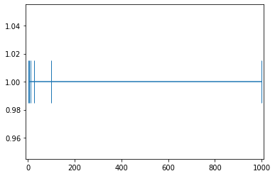
How would we transform these numbers to have a mean of 0? Let’s start by finding the current mean of these numbers.
example_1.mean()190.16666666666666190.16666 is the mean of this set of numbers. In order to make this 0, we should be able to just subtract each number by that amount.
example_1_mean_0 = example_1-example_1.mean(); example_1_mean_0array([-189.16666667, -185.16666667, -180.16666667, -165.16666667,
-90.16666667, 809.83333333])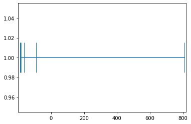
f"The mean is now: {example_1_mean_0.mean()} (AKA: 0)"'The mean is now: 1.8947806286936004e-14 (AKA: 0)'Instead of being distributed around the number 190.1666, the numbers are now distributed around the number 0. With the numbers now balanced correctly, we want to remove scale and units from our dataset. statista.com has the following example to explain standard deviation: > 1,000 people were questioned about their monthly phone bill. The mean value is \$40 and the standard deviation 27. Which means that the average distance of all answers (=values) to the mean is \$27.
Let’s consider what it means then to divide by the standard deviation. For this example, we would divide by 27 so that the standard deviation is 1 and that is going put us into the same scale whether we started with a huge scale like monthly mortgage amount or monthly phone bill. It strips the original scaling away from the dataset and puts onto a scale where 1 is the distance from the center point. This is helpful because it means that a step in any direction will change the loss the same amount. Another way of putting this is that it smooths the loss landscape so all attributes have the same amount of pull.
example_1_mean_0_std_1 = example_1_mean_0/example_1_mean_0.std(); example_1_mean_0_std_1array([-0.52008301, -0.50908566, -0.49533897, -0.45409891, -0.2478986 ,
2.22650516])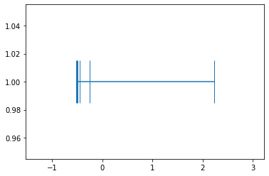
example_1_mean_0_std_1.mean(), example_1_mean_0_std_1.std()(7.401486830834377e-17, 1.0)Notice that in all three graphs, the distribution looks the same. Lots of numbers on the left-hand side and only the one number on the right. But to our neural network, there is a huge difference between taking numbers ranging from -0.52 and 2.23 and taking numbers ranging from 1 to 1000. The weights can make a lot finer adjustments on the normalized version and each incoming data point will be on the same scale. That’s why when an image model has been pretrained on Imagenet, you have to keep the same standard deviation and mean. By using those numbers, you are taking all of the pixels in your image and converting them to the normal range for Imagenet.
Testing the Theory with fastai’s Tabular Application
Now that we have an idea of what is happening, let’s see if we can prove that it actually works how we anticipate. To do this, I will be creating a simple tabular learner and a sample dataloader. I will first train the model on an normalized input and then train the same model using the un-normalized input. My assumption is that the normalized inputs will be much better at converting the x value into y than the un-normalized version.
Experiment Setup
x1 + xN = y
from fastai.tabular.all import *
x = torch.rand((200000,10))
scale_amt = torch.randint(0,100,size=(10,))
#x = x*scale_amt
df = pd.DataFrame(x, columns=[f"x{n}" for n in range(1,11)])
#df['x1']=df['x1']*1000
#df.columns
#df['y'] = df['x1'] + df['x2'] + df['x3'] + df['x4'] + df['x5'] + df['x6'] + df['x7'] + df['x8'] + df['x9'] + df['x10']
df['y'] = (df.values*scale_amt.tolist()).sum(axis=1)
splits = RandomSplitter()(df)
df.head()| x1 | x2 | x3 | x4 | x5 | x6 | x7 | x8 | x9 | x10 | y | |
|---|---|---|---|---|---|---|---|---|---|---|---|
| 0 | 0.075054 | 0.456406 | 0.745085 | 0.930838 | 0.109559 | 0.498177 | 0.565746 | 0.743462 | 0.893542 | 0.796160 | 343.622546 |
| 1 | 0.823718 | 0.925904 | 0.418757 | 0.579081 | 0.645427 | 0.502683 | 0.689346 | 0.439689 | 0.281477 | 0.984495 | 380.632963 |
| 2 | 0.212132 | 0.928440 | 0.068775 | 0.974991 | 0.274955 | 0.107026 | 0.274451 | 0.439982 | 0.731169 | 0.026224 | 295.966817 |
| 3 | 0.874167 | 0.900319 | 0.221668 | 0.755159 | 0.525875 | 0.861770 | 0.347837 | 0.993839 | 0.466206 | 0.554722 | 442.779244 |
| 4 | 0.836071 | 0.795962 | 0.009992 | 0.531759 | 0.619634 | 0.196202 | 0.648332 | 0.899659 | 0.893503 | 0.094362 | 408.136464 |
monitor_parameters is a hook that can be used to monitor values inside of a model. It is a little bit of a hack, but it works really well for getting a better idea what is happening inside the model.
def monitor_parameters(m, i, o):
m.weight_track.append(list(m.parameters())[0].tolist()[0])
m.bias_track.append(list(m.parameters())[1].tolist())Normalized
to_normalized = TabularPandas(df, cont_names=['x1', 'x2', 'x3', 'x4', 'x5', 'x6', 'x7', 'x8', 'x9', 'x10'], y_names='y', procs=[Normalize], splits=splits)
dls_normalized = to_normalized.dataloaders(verbose=True, shuffle=False)
learn_normalized = tabular_learner(dls_normalized, layers=[], config=tabular_config(use_bn=False, bn_cont=False))
learn_normalized.lr_find(start_lr=1e-3, end_lr=1000000)Setting up after_item: Pipeline:
Setting up before_batch: Pipeline:
Setting up after_batch: Pipeline: ReadTabBatchSuggestedLRs(valley=3.981071710586548)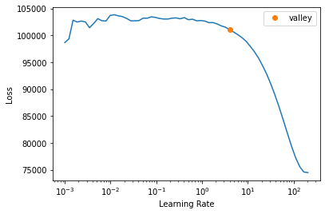
learn_normalized.model.layers[0][0].bias_track = []
learn_normalized.model.layers[0][0].weight_track = []
learn_normalized.model.layers[0][0].register_full_backward_hook(monitor_parameters)<torch.utils.hooks.RemovableHandle at 0x7f44a05ccf70>learn_normalized.fit_one_cycle(10, 10)| epoch | train_loss | valid_loss | time |
|---|---|---|---|
| 0 | 1.142768 | 0.722641 | 00:08 |
| 1 | 6.045738 | 0.614625 | 00:08 |
| 2 | 16.018417 | 7.314993 | 00:08 |
| 3 | 8.353395 | 5.835221 | 00:08 |
| 4 | 3.468160 | 0.493669 | 00:08 |
| 5 | 2.660133 | 1.251976 | 00:08 |
| 6 | 0.722458 | 0.373421 | 00:08 |
| 7 | 0.367568 | 0.272525 | 00:08 |
| 8 | 0.025171 | 0.010871 | 00:08 |
| 9 | 0.000455 | 0.000518 | 00:08 |
learn_normalized.recorder.plot_loss(skip_start=1000)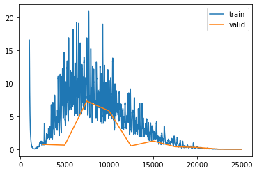
learn_normalized.show_results(ds_idx=0, shuffle=False)| x1 | x2 | x3 | x4 | x5 | x6 | x7 | x8 | x9 | x10 | y | y_pred | |
|---|---|---|---|---|---|---|---|---|---|---|---|---|
| 0 | 1.562167 | -1.569042 | -1.114254 | 0.678972 | -0.447562 | -0.721848 | 0.950705 | -0.506051 | 1.427110 | 1.305289 | 318.861755 | 318.871887 |
| 1 | -0.558561 | 1.409515 | -1.694918 | 0.051202 | -1.187221 | 0.865891 | 1.003036 | -0.675074 | 1.489744 | -1.504115 | 319.647339 | 319.605621 |
| 2 | 0.580085 | 1.621262 | 1.555035 | -1.474297 | 0.485046 | 1.653549 | -1.121346 | 0.184075 | 1.324292 | -0.353307 | 442.348450 | 442.299805 |
| 3 | 1.634533 | 1.501764 | 0.694681 | -0.052227 | 0.998929 | -0.802163 | 0.824090 | 1.452214 | 0.217072 | -0.867735 | 456.612335 | 456.587646 |
| 4 | 0.305931 | 0.446660 | 0.606511 | 0.404355 | -0.881533 | -0.470554 | 1.398422 | 0.411920 | 0.697609 | 1.205599 | 364.134827 | 364.130890 |
| 5 | -0.953506 | -1.129230 | 1.685477 | 0.200103 | 1.446620 | 1.669933 | 0.654975 | -0.218070 | 0.763460 | 1.622134 | 378.366058 | 378.378632 |
| 6 | -1.729204 | 1.402740 | 1.129965 | -1.550283 | -0.174763 | -1.702276 | 0.349754 | -1.626720 | -0.736905 | 0.554198 | 219.651688 | 219.670380 |
| 7 | 1.051801 | 0.651880 | -0.606515 | -0.211603 | 1.065033 | 1.140438 | 1.395582 | -1.302371 | 0.548107 | 0.569542 | 379.511841 | 379.522766 |
| 8 | 0.845884 | -0.547829 | -1.420988 | 0.976506 | -1.266368 | -0.449748 | -0.053614 | -0.578055 | 0.252759 | -0.031057 | 266.948334 | 266.938416 |
plt.plot(learn_normalized.model.layers[0][0].bias_track)
plt.show()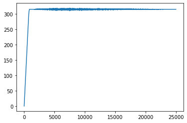
plt.plot(learn_normalized.model.layers[0][0].weight_track)
plt.show()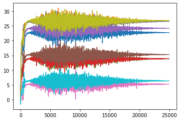
Not Normalized
to_not_normalized = TabularPandas(df, cont_names=['x1', 'x2', 'x3', 'x4', 'x5', 'x6', 'x7', 'x8', 'x9', 'x10'], y_names=['y'], splits=splits)
dls_not_normalized = to_not_normalized.dataloaders(verbose=True, shuffle=False)
dls_not_normalized.one_batch()
learn_not_normalized = tabular_learner(dls_not_normalized, layers=[], config=tabular_config(use_bn=False, bn_cont=False), train_bn=False)
learn_not_normalized.lr_find(start_lr=1e-3, end_lr=1000000)Setting up after_item: Pipeline:
Setting up before_batch: Pipeline:
Setting up after_batch: Pipeline: ReadTabBatchSuggestedLRs(valley=3.2359366416931152)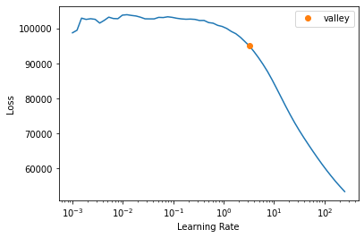
learn_not_normalized.model.layers[0][0].bias_track = []
learn_not_normalized.model.layers[0][0].weight_track = []
learn_not_normalized.model.layers[0][0].register_full_backward_hook(monitor_parameters)<torch.utils.hooks.RemovableHandle at 0x7f4473678e80>learn_not_normalized.fit_one_cycle(10, 10)| epoch | train_loss | valid_loss | time |
|---|---|---|---|
| 0 | 154.066040 | 153.006943 | 00:08 |
| 1 | 453.208710 | 498.198853 | 00:08 |
| 2 | 450.821014 | 405.338318 | 00:08 |
| 3 | 462.034576 | 507.816345 | 00:08 |
| 4 | 402.913025 | 391.320465 | 00:08 |
| 5 | 299.577545 | 273.074860 | 00:08 |
| 6 | 187.224609 | 182.667740 | 00:08 |
| 7 | 95.384758 | 89.960159 | 00:08 |
| 8 | 57.199078 | 54.958164 | 00:08 |
| 9 | 27.854624 | 28.252810 | 00:08 |
learn_not_normalized.recorder.plot_loss(skip_start=500)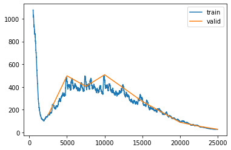
learn_not_normalized.show_results(ds_idx=0, shuffle=False)| x1 | x2 | x3 | x4 | x5 | x6 | x7 | x8 | x9 | x10 | y | y_pred | |
|---|---|---|---|---|---|---|---|---|---|---|---|---|
| 0 | 0.950224 | 0.048134 | 0.178727 | 0.696215 | 0.370312 | 0.293320 | 0.776244 | 0.353630 | 0.912490 | 0.877288 | 318.861755 | 318.913208 |
| 1 | 0.339225 | 0.906561 | 0.010991 | 0.514821 | 0.156830 | 0.751503 | 0.791369 | 0.304868 | 0.930580 | 0.066351 | 319.647339 | 318.007935 |
| 2 | 0.667278 | 0.967587 | 0.949804 | 0.074028 | 0.639484 | 0.978802 | 0.177347 | 0.552729 | 0.882794 | 0.398533 | 442.348450 | 431.576630 |
| 3 | 0.971073 | 0.933147 | 0.701273 | 0.484935 | 0.787802 | 0.270143 | 0.739647 | 0.918583 | 0.563008 | 0.250043 | 456.612335 | 444.280334 |
| 4 | 0.588292 | 0.629064 | 0.675804 | 0.616864 | 0.245058 | 0.365837 | 0.905650 | 0.618462 | 0.701796 | 0.848512 | 364.134827 | 360.096039 |
| 5 | 0.225438 | 0.174889 | 0.987485 | 0.557846 | 0.917016 | 0.983530 | 0.690767 | 0.436712 | 0.720815 | 0.968745 | 378.366058 | 374.773651 |
| 6 | 0.001953 | 0.904608 | 0.827014 | 0.052072 | 0.449048 | 0.010392 | 0.602547 | 0.030322 | 0.287482 | 0.660485 | 219.651688 | 226.905151 |
| 7 | 0.803183 | 0.688209 | 0.325397 | 0.438884 | 0.806881 | 0.830731 | 0.904829 | 0.123895 | 0.658617 | 0.664914 | 379.511841 | 374.775940 |
| 8 | 0.743857 | 0.342450 | 0.090121 | 0.782187 | 0.133986 | 0.371841 | 0.485960 | 0.332858 | 0.573315 | 0.491550 | 266.948334 | 270.995636 |
plt.plot(learn_not_normalized.model.layers[0][0].bias_track)
plt.show()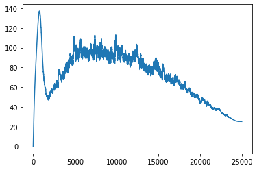
plt.plot(learn_not_normalized.model.layers[0][0].weight_track)
plt.show()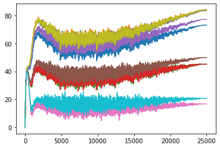
#actual values the parameter value should have
scale_amttensor([79, 93, 48, 48, 84, 53, 18, 92, 93, 22])list(learn_not_normalized.model.layers[0][0].parameters())[Parameter containing:
tensor([[73.1407, 84.1651, 45.1576, 45.1585, 77.2888, 49.8361, 16.7273, 83.5148,
84.1355, 20.6937]], device='cuda:0', requires_grad=True),
Parameter containing:
tensor([25.1835], device='cuda:0', requires_grad=True)]list(learn_normalized.model.layers[0][0].parameters())[Parameter containing:
tensor([[22.7578, 26.8047, 13.8633, 13.8707, 24.2422, 15.2929, 5.2018, 26.5390,
26.8526, 6.3496]], device='cuda:0', requires_grad=True),
Parameter containing:
tensor([315.1483], device='cuda:0', requires_grad=True)]Results
The results ended up matching our theory but in a slightly different way than I had anticipated. You can see that the non-normalized weights line up a lot closer to the scale_amt and after thinking about the reason for that, I think I understand. When the input values are normalized, all of the numbers are put onto the same scale so the easiest way for the gradients to be adjusted is to just move the bias. But in the non-normalized version when adjusting the bias, all of the individual weights would be moving at different rates so it is a lot less likely that the bias will be moved as the best step for the model. Instead the weights are adjusted more during the training process.